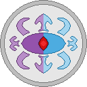

XAOTI - вселенная, повествующая историю о беспощадном технологическом прогрессе
и формах жизни, что пытаются сохранить свою независимость и свободу.
Алчность, жадность и коварство сопровождает на всем пути представителей расы Астродия.
Им противостоят фанатики Астродиостр, что выбрали путь войны и науки.
Падшая империя Алура уже давно забыта всеми, но её следы обнаруживают во всех уголках вселенной.
Новая империя - Графы Жинжер ставит под угрозу стабильность существующих держав и армия мертвецов
Мисури подступает... кто-же станет победителем в конце истории?